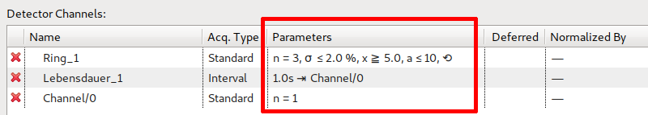

Several properties of a channel added to a scan module can be modified within the detector channels table of the SM Axes / Channels View. How is explained in detail below.
The acquisition type can be selected by a drop down box. Available values are Standard and Interval:
Depending on the chosen selection, different parameters are available (see below ).
In the main phase of a scan module two detector channel trigger phases exist. To trigger a detector channel in the second phase its deferred property has to be set. This is done by clicking in the column (click again to deactivate, i.e. trigger in the first phase):
Normalizing values of a detector channel by another is done by selection in a drop down list:
Standard type channels as well as Interval type channels can be normalized. Detector channels used for normalization cannot be normalized.
The parameters column shows different parameters, depending on the set acquisition type and the values set (empty values are omitted):

For Standard acquisition type, redo events are shown in a tooltip:
To edit the parameters (for either acquisition type) click inside the column and then on the ... button:
Depending on the set acquisition type different dialogs are shown (see below).
For Standard acquisition type detector channels the following dialog is shown:
Further description on these parameters can be found in Detector Channel View.
For Interval acquisition type detector channels the following dialog is shown:

Further description on these parameters can be found in Detector Channel View.